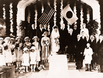
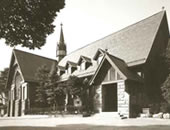

|
|
|
|
1 Let there be light, O God of hosts! 2 Within our passioned hearts instill 3 Give us the peace of vision clear 4 Let woe and waste of warfare cease, |
411求赐真光
1.万有主宰，求赐真光，智慧充满大地四方！
博爱慈仁，遍处繁生，化作行为，代替骄狂。 2.铭刻我心，恬静安宁，磨折争斗永远息平； 能助他人解决人生，摒弃私欲，免入邪情。 3.赐我锐眼，明亮发光，见人之善如见己长； 苦乐相共当非孤独，主爱在怀，忧惧尽荡。 4.战争苦难宣告完毕，愿用劳力重新建立 快乐和爱美好家庭，求赐迷途游子安息。 |
|
https://www.mred365.cn/szxg/7414.html
https://hymnary.org/hymn/NNBH1977/page/360
|
|
|
|
|


| Text: | Let There Be Light |
| Author: | William M. Vories |
| Tune: | [Let there be light, Lord God of hosts] |
| Composer: | William Boyd |
| Short Name: | William Merrell Vories |
| Full Name: | Vories, William Merrell, 1880-1964 |
| Birth Year: | 1880 |
| Death Year: | 1964 |
Tune Information
| Title: | PENTECOST (Boyd) |
| Composer: | William Boyd (1868) |
| Meter: | 8.8.8.8 |
| Incipit: | 33333 21433 33221 |
| Key: | G Major |
| Copyright: | Public Domain |
| Short Name: | William Boyd |
| Full Name: | Boyd, William, 1847-1928 |
| Birth Year: | 1847 |
| Death Year: | 1928 |
William Boyd Jamaica 1847-1928. Born at Montego Bay, he studied under Sabine-Baring Gould, and attended Worcester College,Oxford. He was ordained an Anglican priest in 1877, eventually becoming Vicar at All Saints Church, Norfolk Square, London.
Notes
William Boyd (b. Montego Bay, Jamaica, 1847; d. Paddington, England, 1928) composed PENTECOST in 1864 for the hymn text "Come, Holy Ghost, Our Souls Inspire"; it was published in 1868 in Thirty-Two Hymn Tunes Composed by Members of the University of Oxford. The name PENTECOST derives from the subject matter of that hymn text. Boyd was educated at Hurstpierpoint, where the hymn writer Sabine Baring-Gould (PHH 522) was one of his teachers, and at Worcester College, Oxford. He was ordained in the Church of England and served the Church of All Saints, Norfolk Square, London, from 1893-1918.
The tune PENTECOST was retained from the 1959 Psalter Hymnal, though Dewey Westra originally versified Mary's song for the tune DUKE STREET (412). The humble, meditative character of PENTECOST stands in contrast to the spirit of rejoicing found in DUKE STREET and the settings at 478 and 622. The text can also be sung to PUER NOBIS (327). A simple chant-like tune with a range of only five tones in the melody, PENTECOST is one of the "generic" Victorian tunes of its time (see also QUEBEC, 141, 307; ST. CRISPIN, 276; MORECAMBE 419; and MARYTON, 573). Sing it in harmony, perhaps unaccompanied, but with a firm pulse and not too slowly.
--Psalter Hymnal Handbook, 1988
Let There Be Light, Lord God of Hosts!
This week’s hymn is one I was only vaguely familiar with. The tune was written
by Charles H. C. Zeuner in 1832 and I believe has been used several times with
different texts. It has a strange feeling rhythmically, but as I’ve played it,
there is something quite mesmerizing about its lilt.
The words were written by William M. Vories in 1908. Vories has an interesting
story. He was born in the United States, was an educator, architect and lay
minister. In 1905 he moved to Japan where he opened an architectural office and
eventually married a Japanese woman and became a citizen. He founded a mission
in Japan dedicated to education and businesses in the fields of architecture,
medicine and medical treatment with the practice of investing profits into the
local community. It is said that he owned no property in his lifetime and spent
his time contributing to those around him. This cross-cultural and generous
spirit is quite evident in these words.
Let there be light, Lord God of hosts!
Let there be wisdom on the earth!
Let broad humanity have birth!
Let there be deeds, instead of boasts!
Within our passioned hearts instill
the calm that ends all strain and strife.
Make us thy ministers of life.
Purge us from lusts that curse and kill!
Give us the peace of vision clear
to see each other’s good, our own,
To joy and suffer not alone:
the love that casteth out all fear!
Let woe and waste of warfare cease,
that useful labor yet may build
its homes with love and laughter filled!
God, give your wayward children peace!
When I read these words, I am drawn to the ideas of light and wisdom. There is
an implication of a need to open our eyes and see what we are as humanity –
broadly. A need to open our minds and take in the experiences of our ancestors
and those across the seas; the experiences of our neighbours and those we do not
yet know; the experiences of all who are beautifully different and wonderfully
the same.
These words are a prayer asking for the establishment of peace. But they are not
the words of one who is idle in this desire. There is an understanding that it
is through our deeds, our ability to see other’s and our own good, our useful
labour, and our passionate hearts that homes filled with love and laughter
emerge – and, ultimately, peace. All these things together make us ministers of
life. What a phrase! A minister is simply one who attends to the needs of
others. Being a minister of life is the deliberate act of contributing to the
enrichment of another’s experience. The ways in which we can do this are
endless.
It is quite amazing to me that these old hymn texts still ring true so many
years later. It doesn’t matter to me that this writer had a particular religious
perspective, it matters to me that he was interested in searching for the way to
peace. It is a search that many of us continue – both personally and on a more
global scale. I suspect his notion that we must be active in this search is
accurate. It is not enough to ponder and discuss. Our actions contribute to the
construction of the roads on which we walk, the paths that others find behind
us, the ability for all to find a way forward. What matters is how we walk
through our lives.
Our lives are not about solving all the problems of this world. But we can all
be ministers of life. Finding ways to lay our own special bricks in the
foundation of peace for all. Some of us will lay many bricks, others few. Some
of the bricks have the strength needed for foundations that stand the test of
time. Others are the special decorative bricks that provide beauty and interest.
Others are the corners that keep things aligned. Others have no bricks, but
provide the mortar that holds it all together. Some design, some find the best
sites on which to build, some oversee the construction, some bring water when
the builders are thirsty. Some encourage and offer gratitude. We are actively
the many pieces of this puzzle that can emerge as love, as laughter and as
peace.
Ministers of life. Together – all the wayward children.
Let there be light.
Let there be wisdom.
Let there be peace.
Vories.com Chronology
http://vories.com/english/chronology/02.php


| 1880 | Birth |
Merrell was born on October 28, 1880, in Leavenworth, Kansas,the
first child born to John and Julia. His father, John, whose
ancestors were Dutch, was a successful businessman and served
earnestly in the church. His mother, Julia, was a Sunday school teacher. As a girl, Julia dreamed of going abroad as a missionary. She continued praying that if she had a son she would raise him to dedicate himself to foreign missions and so fulfill her vision. With his devoted parents, Merrell started to attend church at the age of four. |
|
|---|---|---|---|

Mr.Vorise birthplace 
William in infancy 
His parents John and Julia
Tombstone of ” William Merrell” Maternal Grand Father  Leavenworth Presbyterian church |
|||
| 1887 | Age 7 |
Merrell's musical abilities are awakened in elementary school At this time he started to show his music ability through playing the piano and composing music. Later he wrote both word and music of hymn in 1908 and 1910 which was enjoyed singing for a long time in Church of Japan. The word was also known in U.S.A. hymn. |
|
 Merrell & his younger brother John |
|
||
| 1888 | Age 8 |
The Vories family moves to Flagstaff, Arizona, because of
Merrell’s health. When Merrell was seven years old, the family moved to Flagstaff, Arizona, as he was sickly and had been diagnosed with tuberculosis. When they visited the Grand Canyon, he was so impressed by the sight and all Creation. The beauty of nature impressed him so much that his appreciation of nature was refined. He recalled "Since I first saw the San Francisco Peaks, I have never forgotten the feeling of awe and something divine.” Living in this wonderful surroundings and climate, Merrell expanded his knowledge of history, humanity, geology. You can find the article of the story on Vories family in the journal of Arizona History Autumn 1997 issued. |
|
 
William in elementary school 
Flagstaff Presbyterian Church  Grand Canyon |
|||
| 1896 | Age 16 |
The Vories family moves to Denver , Colorado, where Merrell
enrolls at East Denver High School Living in the American West impressed young Merrell with the “frontier spirit,” the indomitable drive to build something new and better in a new land. |
|
 Denver Central Presbyterian Church  East Denver High School |
|||
| 1900 | Age 20 |
Merrell enrolls at Colorado College, in Colorado Springs. He
planned to move to MIT to study to be an architect. He also showed a keen interest in the YMCA movement in his college and he became the treasurer of the Colorado College YMCA. During his student days, he made good friends and he developed his lifelong desire to practice his Christian faith in daily life. The YMCA building in Omi Hachiman was built in memory of his close friend, Herbert C. Andrews. |
|
 Mr.Vories at Colorado College Colorado College |
|||
| 1902 | Age 22 |
Attends the Fourth
International Convention of the Student Volunteer Movement for
Foreign Missions, held at Massey Hall, Toronto,
Canada Merrell listened as Mrs. Howard Taylor, who was a missionary to China, testified about the persecution and martyrdom of Christians there. He felt that her face was transformed to that of Christ questioning him, "What are you going to do?" Moved by Mrs. Taylor's testimony, he changed his mind about pursuing his career as an architect and instead dedicated his life to foreign missions in remote areas. |
|

Massay Hall now  New York student volunteer movement for foreign missions 1902 
Interior of Massay Hall in 1902  Mrs. Howard Taylor |
|||
| 1905 | Age 25 |
【January】Leaves for Japan After graduating from college in 1904, Merrell worked at the YMCA in Colorado Springs waiting for an overseas ministry assignment from the SVM in New York. Before long, his application was accepted and he was sent to Shiga Prefectural Commercial School, which had requested a native English-speaking teacher. He left San Francisco for Yokohama, Japan by steamer on January 10, 1905. |
|
 The Steam Ship China bound for Japan |
|||
|
【February】Starts his English teaching job at the Shiga
Prefectural Commercial School After arriving at Yokohama by the S. S. China, Vories traveled by train to Omih Hachiman, and arrived there on February 2, 1905. When he stood at the remote rural station on a cold windy day, he was only 24 years old. He felt very lonely and uneasy, but wrote in his diary, I believe God sent me here, so I will never move until He makes me move. The new American teacher became very popular with his students. As soon as he arrived in Omi Hachiman, he met a Japanese Christian and together they started Bible classes after school at the house provided for the English teacher. 40 to 100 students gathered together at each class. |
|||
 Mr.Vories and Students at his Bible class  Former Hachiman YMCA designed and built by Mr. Vories Feb. 10,1907. Financed by his savings and donations from his friends in America.  Mr.Vories in his room |
|||